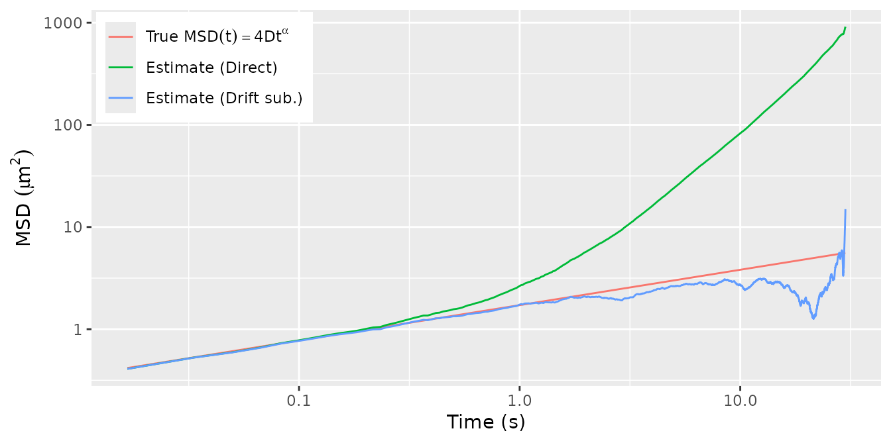

vignettes/msd_conventions.Rmd
msd_conventions.Rmd
require(subdiff)
#> Loading required package: subdiff
require(dplyr)
#> Loading required package: dplyr
#>
#> Attaching package: 'dplyr'
#> The following objects are masked from 'package:stats':
#>
#> filter, lag
#> The following objects are masked from 'package:base':
#>
#> intersect, setdiff, setequal, union
require(tidyr)
#> Loading required package: tidyr
require(ggplot2)
#> Loading required package: ggplot2
require(scales)
#> Loading required package: scalesThe purpose of this vignette is to simulate data from simple subdiffusion models and visually assess that various candidate estimators produce the correct value.
The MSD of a -dimensional trajectory is defined as and the MSD of fractional Brownian motion with parameters is defined as
Let us verify the conventions above by estimating the parameters of simulated trajectories of Brownian motion. The data will be generated and analysed in dimensions.
First let us compare the empirical MSD estimate to the true function .
ndim <- 2 # number of trajectory dimensions
# true parameter values
D <- .43
mu <- runif(ndim) # drift per coordinate
# simulation setup
N <- 1800 # number of observations
dt <- 1/60 # framerate
# simulate a trajectory
dX <- t(matrix(rnorm(N*ndim), ndim, N) * sqrt(2 * D * dt) + mu * dt)
Xt <- apply(dX, 2, cumsum)
msd_hat <- cbind(nodrift = msd_fit(Xt, nlag = nrow(Xt)-2),
direct = msd_fit(Xt, nlag = nrow(Xt)-2, demean = FALSE))
tibble(t = 1:nrow(msd_hat) * dt,
direct = msd_hat[,"direct"],
nodrift = msd_hat[,"nodrift"],
true = 2*ndim * D * t) %>%
pivot_longer(cols = direct:true, names_to = "type",
values_to = "msd") %>%
mutate(type = factor(type, levels = c("true", "direct", "nodrift"),
labels = c("'True '*MSD(t) == 4*D*t",
"'Estimate (Direct)'",
"'Estimate (Drift sub.)'"))) %>%
ggplot(aes(x = t, y = msd)) +
geom_line(aes(color = type)) +
scale_x_log10() + scale_y_log10() +
scale_color_discrete(labels = label_parse()) +
xlab(expression("Time "*"(s)")) +
ylab(expression("MSD "*(mu*m^2))) +
theme(legend.position = c(0,1),
legend.title = element_blank(),
legend.justification = c(-.02, 1.02),
legend.text.align = 0)
#> Warning: The `legend.text.align` argument of `theme()` is deprecated as of ggplot2
#> 3.5.0.
#> ℹ Please use theme(legend.text = element_text(hjust)) instead.
#> This warning is displayed once every 8 hours.
#> Call `lifecycle::last_lifecycle_warnings()` to see where this warning was
#> generated.
#> Warning: A numeric `legend.position` argument in `theme()` was deprecated in ggplot2
#> 3.5.0.
#> ℹ Please use the `legend.position.inside` argument of `theme()` instead.
#> This warning is displayed once every 8 hours.
#> Call `lifecycle::last_lifecycle_warnings()` to see where this warning was
#> generated.Now let us compare various subdiffusion estimators to the true values of . The subdiffusion estimators are:
ls: A version of least-squares. There is no unique
definition of the LS estimator as it depends among other things on the
method of drift correction and the set of timepoints used in the
regression. Here we use a linear drift subtraction and timepoints
.
fbm: MLE of fractional Brownian motion. Drift
correction in this and the subsequent MLE estimators is linear.
fsd: MLE of fBM + Savin-Doyle noise model (Savin and Doyle
2005). This accounts for static noise via a white noise floor
and dynamic errors due to particle movement during the camera exposure
time for each frame. It’s identical to fSN when there is no dynamic
error (camera exposure time = 0).
fma: MLE with fBM + MA(1) noise. This is one of the
models proposed in Ling et al. (2022).
farma: MLE with fBM + ARMA(1,1) noise, another model
proposed in Ling et al. (2022).
Since there is no noise here and the fBM model is correct – in that BM is a special case of it with – we expect all estimators to produce very similar results. The code below shows that the subdiff implementation of these models consistently estimates .
#' Calculate `(alpha, log(D))` estimates for various estimators.
#'
#' @param Xt Matrix of `N x ndim` particle trajectory observations.
#' @param dt Interobservation time.
#' @return Matrix with two rows corresponding to `alpha` and `D` estimates for models: "ls", "fbm", "fsd", "fma", and "farma".
fit_models <- function(Xt, dt) {
ls_lags <- c(1, 2, 5, 10, 20, 50, 100, 200, 500)
ad <- cbind(
ls = ls_fit(Xt, dt, lags = ls_lags, vcov = FALSE),
fbm = fbm_fit(Xt, dt, vcov = FALSE),
fsd = fsd_fit(Xt, dt, vcov = FALSE),
fma = farma_fit(Xt, dt, order = c(0, 1), vcov = FALSE),
farma = farma_fit(Xt, dt, order = c(1, 1), vcov = FALSE)
)
ad[2,] <- exp(ad[2,]) # convert logD to D
rownames(ad)[2] <- "D"
ad
}
ad_fit <- fit_models(Xt, dt)
#> Warning in fsd_fit(Xt, dt, vcov = FALSE): `optim()` did not converge.
# display alongside true value
signif(cbind(True = c(alpha = 1, D = D), ad_fit), 2)
#> True ls fbm fsd fma farma
#> alpha 1.00 0.97 1.00 0.99 0.99 0.99
#> D 0.43 0.39 0.41 0.40 0.41 0.40This just confirms that the estimators remain consistent with
simulated fractional
Brownian motion (fBM). First, we simulate an fBM trajectory and plot
the true and empirical MSD. Note that, for testing purposes, the fBM
trajectory is generated via the Cholesky decomposition of its variance
matrix. This method is transparent but scales cubically in the number of
fBM observations. A more efficient method of simulation is used by
SuperGauss::rnormtz(), which is also used internally by
subdiff.
ndim <- 2 # number of trajectory dimensions
# true parameter values
D <- .43
alpha <- runif(1) # randomly chosen between 0 and 1
mu <- runif(ndim) # drift per coordinate
# simulation setup
N <- 1800 # number of observations
dt <- 1/60 # framerate
# simulate a trajectory
# do this using an inefficient but easy to check method
V <- outer(
X = 1:N * dt,
Y = 1:N * dt,
FUN = function(t, s) {
D * (abs(t)^alpha + abs(s)^alpha - abs(t-s)^alpha)
}
)
Xt <- t(chol(V)) %*% matrix(rnorm(N*ndim), N, ndim)
Xt <- Xt + (1:N * dt) %o% mu
## dX <- SuperGauss::rnormtz(n = ndim,
## acf = 2 * D * fbm_acf(alpha = alpha, dT = dt, N = N))
## dX <- sweep(dX, 2, mu * dt, FUN = "+")
## Xt <- apply(dX, 2, cumsum)
# msd estimate
msd_hat <- cbind(nodrift = msd_fit(Xt, nlag = nrow(Xt)-2),
direct = msd_fit(Xt, nlag = nrow(Xt)-2, demean = FALSE))
tibble(t = 1:nrow(msd_hat) * dt,
direct = msd_hat[,"direct"],
nodrift = msd_hat[,"nodrift"],
true = 2*ndim * D * t^alpha) %>%
pivot_longer(cols = direct:true, names_to = "type",
values_to = "msd") %>%
mutate(type = factor(type, levels = c("true", "direct", "nodrift"),
labels = c("'True '*MSD(t) == 4*D*t^alpha",
"'Estimate (Direct)'",
"'Estimate (Drift sub.)'"))) %>%
ggplot(aes(x = t, y = msd)) +
geom_line(aes(color = type)) +
scale_x_log10() + scale_y_log10() +
scale_color_discrete(labels = label_parse()) +
xlab(expression("Time "*"(s)")) +
ylab(expression("MSD "*(mu*m^2))) +
theme(legend.position = c(0,1),
legend.title = element_blank(),
legend.justification = c(-.02, 1.02),
legend.text.align = 0)
Now we fit the fBM trajectory wit various subdiffusion estimators:
# fit various estimators
ad_fit <- fit_models(Xt, dt)
# display estimates with true value
signif(cbind(True = c(alpha = alpha, D = D), ad_fit), 2)
#> True ls fbm fsd fma farma
#> alpha 0.35 0.32 0.35 0.33 0.33 0.31
#> D 0.43 0.40 0.42 0.42 0.42 0.43